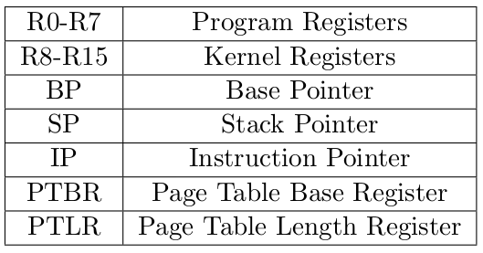
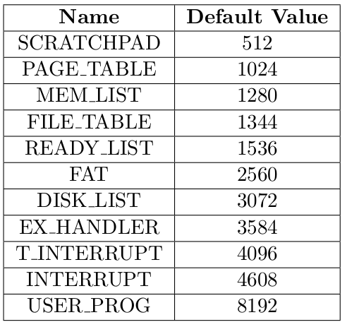

Introduction
SPL or System Programmer’s Language is an untyped programming language designed for implementation of an operating system on XSM
(Experimental String Machine) architecture. The language is minimalistic and consists only of basic constructs required for the implementation.
Programming using SPL requires a basic understanding of the underlying XSM architecture and operating system concepts.
Lexical Elements
Comments and White Spaces
SPL allows only single line comments. Comments start with the character sequence // and stop at the end of the line.
White spaces in the program including tabs, newline and horizontal spaces are ignored.
Keywords
The following are the reserved words in SPL and it cannot be used as identifiers.
| alias | else | if | store | while |
| define | endif | ireturn | break | continue |
| do | endwhile | load | then | read |
| print |
Operators and Delimiters
The following are the operators and delimiters in SPL
| ( | ) | ; | [ | ] | / | * | + | - | % |
| > | < | >= | <= | != | == | = | && | || | ! |
Registers
SPL allows the use of 21 registers for various operations. (R0-R15, BP, SP, IP, PTBR, PTLR)
Identifiers
Identifiers are used as symbolic names for constants and aliases for registers.
Identifiers should start with an alphabet but may contain alphabets, digits and/or underscore ( _ ).
No other special characters are allowed in identifiers.
Literals
Integer and String literals are permitted in SPL. An integer literal is a sequence of digits representing an integer.
Negative integers are represented with a negative sign preceding the sequence of digits.
A string literal is a sequence of characters which are enclosed within double quotes (" ").
eg : "alice"
Register Set
SPL doesn’t allow the use of declared variables. Instead a fixed set of registers is provided.
The register set in SPL contains 26 registers. There is a direct mapping between these registers and the machine registers in XSM.

Aliasing
Any register can be referred to by using a different name. A name is assigned to a particular register using the alias keyword.
Each register can be assigned to only one alias at any particular point of time. However, a register can be reassigned to a different alias at a later point.
Aliasing can also be done inside the if and while block. However, the alias will only be valid within the if and while block it is defined in.
The already defined alias for the register(if any) will only be hidden inside if and while blocks. No two registers can have the same alias name simultaneously.
Constants
Symbolic names can be assigned to values using the define keyword.
Unlike aliasing, two or more names can be assigned to the same value.
A constant can only be defined once in a program.
Predefined Constants
SPL provides a set of predefined constants.
These predefined constants can be assigned to different values explicitly by the user using define keyword.
These constants are mostly starting addresses of various OS components in the memory.
The predefined set of constants provided in SPL are

Expressions
An expression specifies the computation of a value by applying operators to operands. SPL supports arithmetic and logical expressions.
Arithmetic Expressions
Registers, constants, and 2 or more arithmetic expressions connected using arithmetic operators are categorized as arithmetic expressions.
SPL provides five arithmetic operators, viz., +, -, *, / (Integer Division) and % (Modulo operator) through which arithmetic expressions may be combined.
Expression syntax and semantics are similar to standard practice in programming languages and normal rules of precedence, associativity and paranthesization hold.
Logical Expressions
Logical expressions may be formed by combining arithmetic expressions using relational operators.
The relational operators supported by SPL are
>, <, >=, <=, !=, ==
Standard meanings apply to these operators. A relational operator will take in two arguments and return 1 if the relation is valid and 0 otherwise.
The relational operators can also be applied to strings. <, >, <=, >= compares two strings lexicographically. != and == checks for equality in the case of strings. eg:
"adam" < "apple" // This returns 1
"hansel" == "gretel" // This returns 0
Logical expressions themselves may be combined using logical operators, && (logical and) , || (logical or) and ! (not).
Addressing Expressions
Memory of the meachine can be directly accessed in an SPL program.
A word in the memory is accessed by specifying the addressing element, i.e. memory location within [ ].
This corresponds to the value stored in the given address. An arithmetic expression or an addressing expression can be used to specify the address.
Examples of addressing expressions:
[1024], [R3], [R5+[R7]+128], [FAT + R2] etc.
Statements
Statements control the execution of the program. All statements in SPL are terminated with a semicolon ;
Define Statement
Define statement is used to define a symbolic name for a value. Define statements should be used before any other statment in an SPL program.
The keyword define is used to associate a literal to a symbolic name.
define constant name value;
Alias Statement
An alias statement is used to associate a register with a name.
Alias statements can be used anywhere in the program except within if and while statements.
alias alias_name register_name ;
Assignment Statement
The SPL assignment statement assigns the value of an expression or value stored in a memory address to a register or a memory address.
= is the assignment operator used in SPL. The operand on the right hand side of the operator is assigned to the left hand side.
The general syntax is as follows
Register / Alias / [Address] = Register / Number / String / Expression / [Address] ;
If Statment
If statements specify the conditional execution of two branches according to the value of a logical expression.
If the expression evaluates to 1, the if branch is executed, otherwise the else branch is executed. The else part is optional.
The general syntax is as follows
if (logical expression) then
statements;
else
statements;
endif;
While Statement
While statement iteratively executes a set of statements based on a condition.
The condition is defined using a logical expression.
The statements are iteratively executed as long as the condition is true.
while (logical expression) do
statements;
endwhile;
Break Statement
Break statement is a statement which is used in a while loop block.
This statement stops the execution of the loop in which it is used and passes the control of execution to the next statement after the loop.
This statement cannot be used anywhere else other than while loop. The syntax is as follows
break ;
Continue Statement
Continue statement is a statement which is also used only in a while loop block.
This statement skips the current iteration of the loop and passes the control to the next iteration after checking the loop condition.
The syntax is as follows
continue ;
ireturn Statement
ireturn statement is used to pass control from kernel mode to user mode.
The ireturn is generally used at the end of an interrupt code.
ireturn;
Read/Print Statements
The read and print statements are used as standard input and output statements. The read statement reads a value from the standard input device and stores it in a register.
The print statement outputs value of a register or an integer/string literal or value of a memory location.
read Register;
print Register / Number / String / Expression / [Address];
Load/Store Statement
Loading and storing between filesystem and memory is accomplished using load and store statements in SPL.
load statement loads the block specified by block_number from the disk to the the page speficied by the page_number in the memory.
store statement stores the page specified by page_number in the memory to the the block speficied by the block_number in the disk.
The page_number and block_number can be specified using arithmetic expressions.
load (page_number, block_number);
store (page_number, block_number);
breakpoint Statement
breakpoint statement displays the contents of registers and memory locations at the point where the statement is used.
breakpoint;